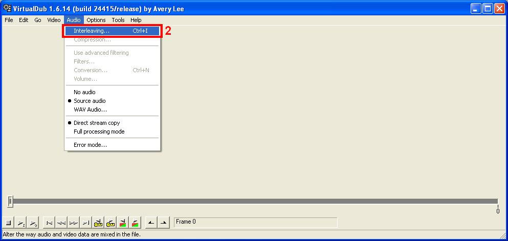

Rip Your Troubles Away
by David Muller
Table Of Contents:
Introduction
Materials
Software
Part 1: The Rip
Part 2: The FlasK
Selecting A File
Setting Formats And Bitrates
Setting Advanced Options
Video
Audio
Post Processing
Files
General
Part 3: The Dub
Settings
Tasks
Dubbing a FlasKed File
Splitting A FlasKed File
Rejoining A Segmented File
Saving A Soundtrack (Audio Tracks)
Saving A Single Frame
Conclusion
Legal
Introduction
DVDs can hold an enormous quantity of data: up to 4.7GB on a single-layer disc or up to 8.5GB on a dual-layer disc. They are a remarkable improvement over both the bulky VHS tape and the ubiquitous CD (which holds only 700MB, or 0.7GB). However, most DVD movies are sold in large boxes which can increase the movie’s weight by a factor of two or more and its volume by five times or more, virtually eliminating their portability. Even worse, a disc runs the risk of damage each time it is removed from its packaging. These problems can make collecting and enjoying DVDs more trouble than they should be.
Fortunately, there is a solution: ripping. There are a number of methods for videophiles to copy the contents of a DVD onto a computer hard drive and convert them to a more compact, portable format. This article will guide readers through one effective DVD ripping process, covering many important details of the ripping process.
Materials
First you will need to gather these required materials:
- A DVD-ROM drive or better
- A decent computer – the CPU speed and hard drive size will make the most difference here.
- DVDs
Software
You will also need to download and install the following programs:
- SmartRipper
- This program streamlines the transfer of a DVD’s files to your hard drive.
- DivX Codec
- This program will allow your computer to create MPEG4 (also known as AVI, Audio-Video Interleave) format video files.
- Radium MP3 Codec
- This program will allow your computer to use a variety of audio formats, sizes, and qualities.
-
- FlasKMPEG Encoder
-
- This program constitutes the majority of the ripping process.
- VirtualDUB
-
- This program lets you do more with your encoded file, including syncing and splitting.
Before you can start ripping, you need to download and install the required programs and follow any additional instructions they give you. The two codecs listed above need to be installed and functioning before ripping, but do not add any steps to a rip.
Part 1: The Rip
- To rip a DVD (copy it to your hard drive), put it in the DVD-ROM drive and play it for a few seconds with Windows Media Player, PowerDVD, Nero Showtime, or some other such program to unlock it. This will allow SmartRipper full access to the files on the disc.
- Open SmartRipper. You should see a small window pop up describing SmartRipper’s attempts to read the DVD.
- Click the Settings tab to adjust your preferences.
- Set the Key-Check to “Once.”
- Choose a file splitting mode:
- max-filesize
- This setting is for older computers.
- every vob-file
- This is the default, ordinary mode.
- every chapter
- This setting will create a separate file for every chapter. This can be important when you want to split a VTS (video title sequence) file into parts. For example, a television show might have two VTS files per disc and three or four episodes per VTS. In this case, you would select this mode and choose only the chapters of the episode you want, keeping each episode’s group of ripped chapters separate to be able to process them individually later.
- every vob-id
- You won’t need this setting.
- every cell-id
- You won’t need this setting.
- Click "OK."
- Choose the video you want to rip in the “Title->Program Chain->Angle” field.
- Choose the chapters you want to rip in the “->Chapters” field.
- Browse to the location where the ripped files will be.
- Click “Start.”
- A television episode 22 minutes long will take between one and three minutes to rip, and a full-length movie can take 15 minutes or more. SmartRipper will notify you when it finishes a rip.
Part 2: The FlasK
Run FlasKMPEG.
Selecting A File

- Select File -> Open Media.
- If the video you want to encode was contained in a single “Title,” double-click to choose a file that ends in “.ifo.” If you didn’t rip an entire “Title” (perhaps because a “Title” contained several episodes of a television show), choose a file that ends in “.vob.” When you choose a .vob file, FlasKMPEG will also include all .vob files connected to the one you chose.
- Choose what audio or subtitle streams you want to include by clicking on them. To deselect a selected subtitle stream, simply click on it again.
- Select “FlasK this DVD!”
Setting Formats And Bitrates
- Select “Options-> Output Format Options.”
- Under “Video Codes: Double Click to configure,” select “DivX ;-) MPEG-4 Low-Motion.”
- Under “Audio Codecs,” select “Fraunhofer IIS MPEG Layer-3 Codec (professional).”
- Click “Configure.”
- Enter “10” (without the quotes) for the first field, “100” for the first slider, and “6000” for the second slider.
- Click “OK.”
- Click “Configure First Pass.”
- Use the same settings as in Step 5.
- Click “OK.”
- Click “Configure Second Pass” and check that the settings are the same as in “Configure First Pass.”
- Click "OK."
- Under “Available formats for audio codec,” choose any option that mentions “Stereo” and “48,000 Hz.” This will give you stereo sound that syncs properly with the video. You’ll get excellent sound with a bitrate of “128 kBit/s,” but you can choose a lower or higher bitrate for less space or better quality, respectively.
- Click “OK.”
Setting Advanced Options
- Select "Options-> Advanced Options."
- Click “OK” or “Cancel” at any time to accept any changes you’ve made and close the dialog box or discard any changes you’ve made and close the dialog box, respectively.
Video

- Click on the "Video" tab.
- In “Frame Size,” uncheck “Don't resize,” make the “Width” “480,” and make the height “320.” The reasons for this will be discussed below.
-
In “Dual Pass,” check “Perform dual pass encoding.” While this will take FlasKMPEG twice as long to encode, it will yield much better results. The way it does this is as follows:
- FlasKMPEG analyzes the video and stores data about when to devote a higher bitrate to fast-motion parts and a lower bitrate to lower-motion parts in a temporary log file.
- FlasKMPEG encodes the video with information from the log file it created.
- The result is a video that can look good everywhere without sacrificing too much disk space.
However, if you encode the video at its original, full resolution of 720x480, Dual Pass will make a mess of the job. It will be forced to devote an extremely high bitrate to fast-motion parts and a woefully inadequate bitrate to lower-motion parts. This will cause an amazing amount of artifacts (which are bad) to appear all the time in your video. If you choose a resolution of 480x320, though, FlasKMPEG will be able to create a video that looks excellent at all times and will usually take up a lot less space than a video created using Single Pass (which encodes all parts at the bitrate you select, which is wasteful during low-motion parts).
- The “Time Base (fps) section is the frames per second of the encoded video. FlasKMPEG will automatically detect the correct framerate.
- In the “Video Structure” section, try starting with all three checkboxes checked. If the entire video ends up looking wavy, choppy, or otherwise unacceptable, try changing these options. You’ll have to experiment a bit to see what works best with each DVD.
Audio
- Click on the “Audio” tab.
- Select “Decode audio.”
- Uncheck “Same as input,” select “48000 Hz,” and recheck “Same as input.” This will ensure that the audio sampling rate is the proper 48000 Hz.
Post Processing
- Click on the “Post Processing” tab.
- Make sure that “No crop” is selected.
- Make sure that “Keep aspect ratio” is not selected.
Files
- Click on the “Files” tab.
- Click on the “Browse” button to choose a location and a name for FlasKMPEG’s output file, or enter them into the text box. The filename does not need to end with “.avi,” as FlasKMPEG will add that automatically.
General
- Click on the “General” tab.
- Make sure that “Compile whole file” is selected.
- Since you’ve gone through all of the options in this dialog box, you can click “OK” at this point to accept the changes you’ve just made.
- Click “FlasK it!”
Part 3: The Dub
- Run VirtualDub.
- To open a file, select “File-> Open Video File” or press “Ctrl+O.”
Settings


- Select “Video-> Direct stream copy.”
- Select “Audio-> Interleaving.”
- Set the “Interleave audio every” field to “100” and select “ms” after it.
- The “Audio skew correction” section is sometimes necessary if the video and audio in a clip are not correctly synced. If something happens in a clip and you hear it a fraction of a second later, make the “Delay audio track by” value negative. This happens more often than the opposite, in which case you would use a positive value.
- Click "OK."
Tasks
Dubbing A FlasKed File

- Follow the steps above.
- Select “File-> Save as AVI.”
- Browse to a location and choose a filename.
- Press “Enter” or click "Save."
- The process should take between three and five minutes, depending on the filesize.
Splitting A FlasKed File
You might want to split a file into parts for several reasons, including:
- To fit a large video onto several CDs
- To save a small video segment of particular interest
- Set the slider at the beginning of the file by selecting “Go-> Beginning,” pressing “Ctrl+Left,” or pressing “[Start].”
- Mark the beginning of a desired video segment by selecting “Edit-> Set selection start,” pressing “Home,” or clicking “[Mark in].”
- Click and drag the slider to the endpoint of the desired video segment. Hold “Shift” while you drag to snap the slider between keyframes. Select “Go-> Prev keyframe,” press “Shift+Left,” or click “[Key previous]” to snap to the closest keyframe before the slider position. Select “Go-> Next keyframe,” press “Shift+Left,” or click “[Key next]” to snap to the closest keyframe after the slider position.
- About Keyframes
- Keyframes are inserted regularly into a video file when it is encoded. If you follow the above directions, keeping the default settings, FlasKMPEG will insert a keyframe into a video file every ten seconds. A video segment must start at a keyframe, but doesn’t necessarily have to end in one. If you are splitting a video into parts, each section will have to begin and end in a keyframe so that the following section can begin in one. The segment containing the end of the video does not have to end in a keyframe and the slider can be set to the last frame in the video. Try to use keyframes that occur in parts of the video with little or no action or dialogue for a more seamless experience.
- Mark the end of a desired video segment by selecting “Edit-> Set selection end,” pressing “End,” or clicking “[Mark out].”
- Follow steps 2-5 in Dubbing A FlasKed File, above, to save the current segment. Remember that each segment needs a unique filename.
- Keeping the slider at the end of the previous segment, follow step 2 above.
- After the beginning of the segment has been marked, follow steps 3-5 above.
- Repeat steps 2-5 above to save the remaining segments.
- For the last segment, follow step 6 above and then select “Go-> End,” press “Ctrl+Right,” or click “[End]” to make the last segment end at the end of the original video.
- Follow step 5 above (steps 2-5 in Dubbing A FlasKed File) to save the last segment.
Rejoining A Segmented File
- Open the first segment of the segmented video file by selecting “File-> Open Video File” or pressing “Ctrl+O.”
- Attach the second segment by selecting “File-> Append AVI segment.”
- Browse to the next segment, and double-click it.
- VirtualDub will automatically append any appropriate files until the video is complete, but only if they are all in the same folder. If you stored each segment in a separate folder, follow step 2 above for each segment.
- Follow steps 2-5 in Dubbing A FlasKed File, above, to save the completed video.
Saving A Soundtrack (Audio Tracks)
- Navigate to the beginning of an audio track by using the slider or the buttons at the bottom of VirtualDub’s control panel.
- Mark the beginning of a desired audio track by selecting “Edit-> Set selection start,” pressing “Home,” or clicking “[Mark in].”
- Navigate to the end of an audio track by using the slider or the buttons at the bottom of VirtualDub’s control panel.
- Mark the end of a desired audio track by selecting “Edit-> Set selection end,” pressing “End,” or clicking “[Mark out].”
- Select “File-> Save WAV.”
- Browse to a location and choose a unique filename.
- Click “Save.”
- Repeat steps 1-7 above for each desired audio track.
Saving A Single Frame
- Navigate to the desired frame by using the slider or the buttons at the bottom of VirtualDub’s control panel.
- Select “Video-> Copy source frame to clipboard” or press “Ctrl+1.”
- Open a program such as Windows Paint (located in “Start-> All Programs-> Accessories-> Paint” in Windows XP).
- Select “Edit-> Paste” or press “Ctrl+V.”
- Select “File-> Save” or press “Ctrl+S.”
- Browse to a location and choose a unique filename.
- Click “Save.”
Conclusion
You now have complete control over the DVDs cluttering the space around you, whether they’re on shelves, racks, or in stacks on the floor. You can watch DVDs when it’s convenient for you. You can bring every episode of your favorite television shows wherever you go. You can listen to snippets of your favorite movies or shows on a portable audio player. You can even send your friends a snapshot of a favorite scene. And, perhaps most importantly for the couch potato in all of us, you are no longer forced to reach for a shelf, perhaps all the way across a large room, simply to watch your movies.
Legal
This guide is purely informational.
This guide, including its contents, screenshots, and design, was created by David Muller and is copyright David Muller 2006. However, David Muller assumes no responsibility for anything anyone does for any reason, nor for any event that occurs for any reason. David Muller neither encourages nor condones anything of any sort.
Contact